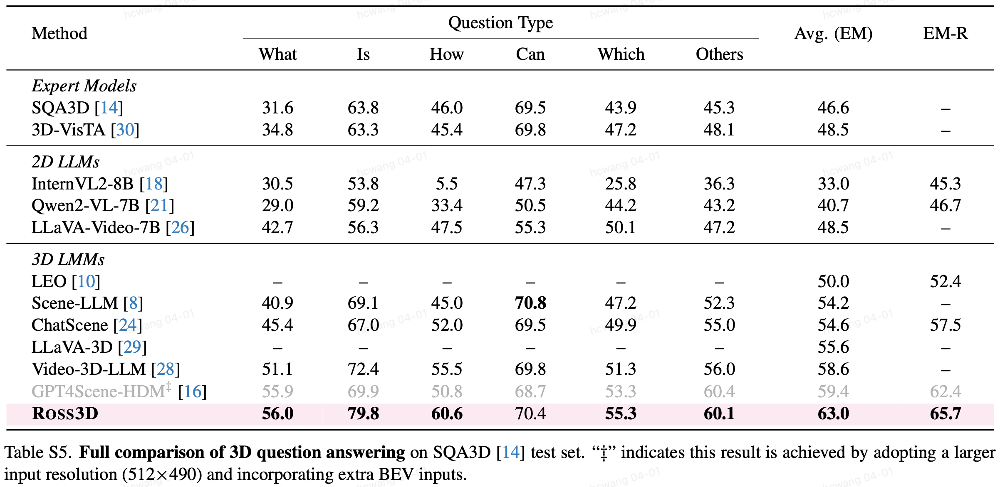
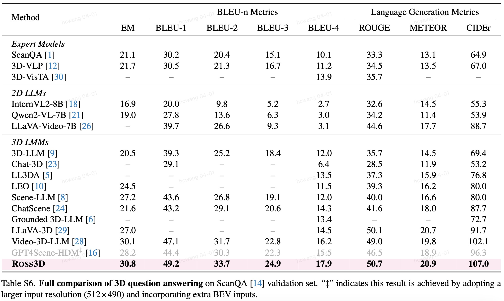
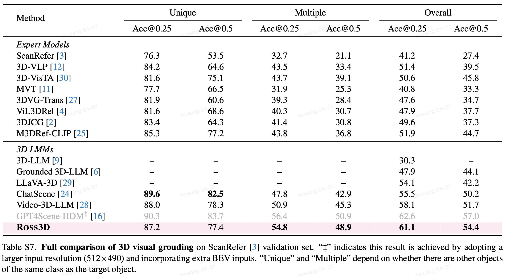
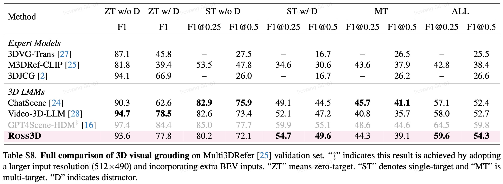

Qualitative Performance





@article{wang2025ross3d,
author={Haochen Wang and Yucheng Zhao and Tiancai Wang and Haoqiang Fan and Xiangyu Zhang and Zhaoxiang Zhang},
title={Ross3d: Reconstructive Visual Instruction Tuning with 3D-Awareness},
journal={TBD},
year={2025},
}